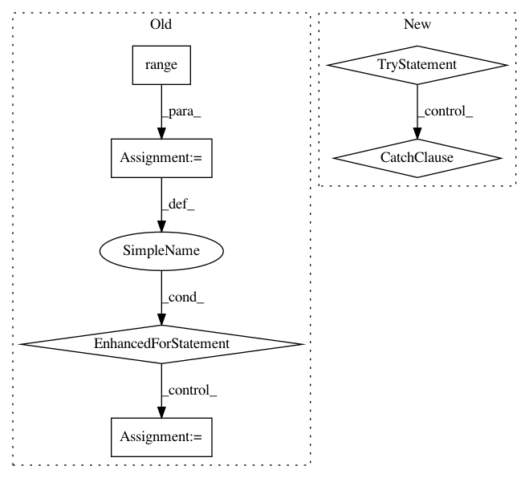

c99295e1903952b3b806c4fd641e28f852b17c36,autokeras/utils.py,ModelTrainer,train_model,#ModelTrainer#,101
Before Change
flow = self.datagen.flow(self.x_train, self.y_train, batch_size)
else:
flow = None
for _ in range(constant.MAX_ITER_NUM):
if constant.DATA_AUGMENTATION:
self.model.fit_generator(flow, epochs=constant.EPOCHS_EACH)
else:
self.model.fit(self.x_train, self.y_train,
batch_size=batch_size,
epochs=constant.EPOCHS_EACH,
verbose=self.verbose)
loss, _ = self.model.evaluate(self.x_test, self.y_test, verbose=self.verbose)
if self._converged(loss):
break
return self.minimum_loss
def extract_config(network):
After Change
config.gpu_options.allow_growth = True
sess = tf.Session(config=config)
backend.set_session(sess)
try:
if constant.DATA_AUGMENTATION:
flow = self.datagen.flow(self.x_train, self.y_train, batch_size)
self.model.fit_generator(flow,
epochs=constant.MAX_ITER_NUM,
validation_data=(self.x_test, self.y_test),
callbacks=callbacks,
verbose=self.verbose)
else:
self.model.fit(self.x_train, self.y_train,
batch_size=batch_size,
epochs=constant.MAX_ITER_NUM,
validation_data=(self.x_test, self.y_test),
callbacks=callbacks,
verbose=self.verbose)
except NoImprovementError as e:
if self.verbose:
print("Training finished!")
print(e.message)
def extract_config(network):
Return configuration of one model
return network.get_config()
In pattern: SUPERPATTERN
Frequency: 4
Non-data size: 6
Instances
Project Name: keras-team/autokeras
Commit Name: c99295e1903952b3b806c4fd641e28f852b17c36
Time: 2018-04-18
Author: jhfjhfj1@gmail.com
File Name: autokeras/utils.py
Class Name: ModelTrainer
Method Name: train_model
Project Name: williamFalcon/pytorch-lightning
Commit Name: ecd3678a1fdf234ac47dba3b56784a3c7467d83d
Time: 2021-02-10
Author: carlossmocholi@gmail.com
File Name: pytorch_lightning/utilities/imports.py
Class Name:
Method Name: _module_available
Project Name: NVIDIA/OpenSeq2Seq
Commit Name: 80373cedf76f85b47de78080712f508a46c5345c
Time: 2018-05-16
Author: okuchaiev@nvidia.com
File Name: open_seq2seq/models/text2text_test.py
Class Name: BasicText2TextWithAttentionTest
Method Name: test_train
Project Name: NVIDIA/OpenSeq2Seq
Commit Name: 80373cedf76f85b47de78080712f508a46c5345c
Time: 2018-05-16
Author: okuchaiev@nvidia.com
File Name: open_seq2seq/models/text2text_test.py
Class Name: BasicText2TextWithAttentionTestOnHorovod
Method Name: test_train